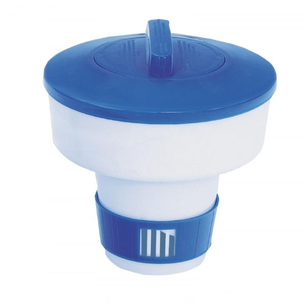
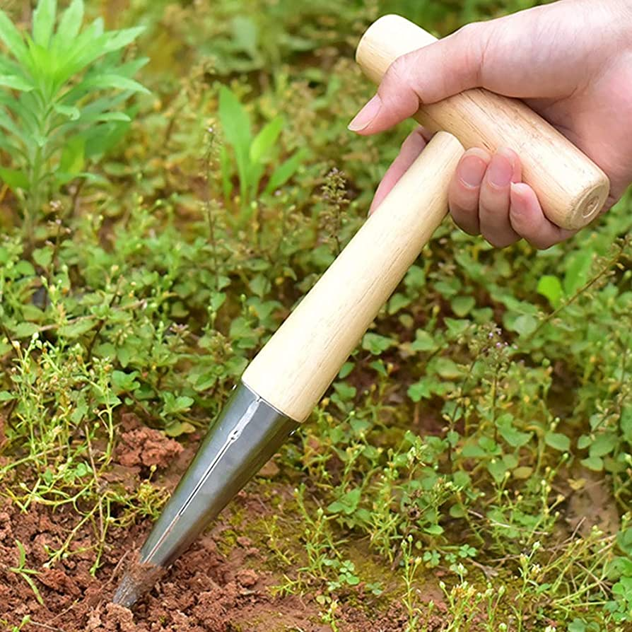
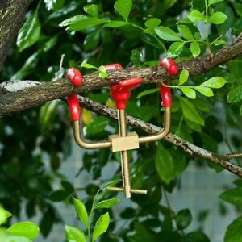

Introducción
En esta página encontraremos las palabras más comunes para la letra D.
| Dosificador | Dibber |
|---|---|
|  |  |
| Es una herramienta utilizada para distribuir de manera uniforme fertilizantes, semillas o productos químicos en el jardín. | Es una herramienta manual utilizada para hacer agujeros en el suelo para plantar semillas, bulbos o plántulas. |
| Doblador de ramas | Desmalezador eléctrico |
|  |  |
| Es una herramienta utilizada para guiar y dar forma a las ramas de las plantas. | Es una herramienta motorizada utilizada para eliminar las malas hierbas de manera rápida y eficiente. |
| Drenaje francés | |
 |
|
| Es una técnica utilizada para eliminar el exceso de agua en el jardín o en áreas específicas. Consiste en cavar una zanja inclinada, revestida con material permeable y rellena de grava, que permite que el agua fluya hacia un área de drenaje adecuada, evitando la acumulación y el encharcamiento. | |